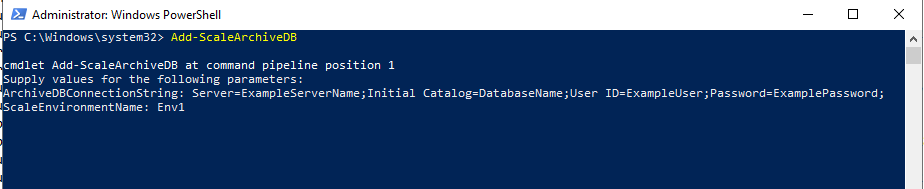
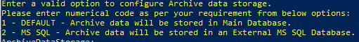
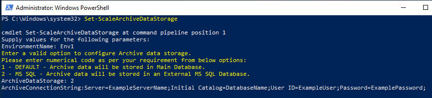
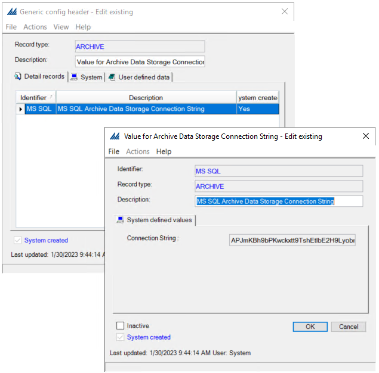

Overview
Historically, SCALE maintains the archive data in the production or default database, which can grow the database size over years. To handle this, we now have an ability to configure an external data storage for archive data, where you have an option to configure and have system directly write the data to an archive database.
- Ability to configure an external archive database, currently only supported external storage type is 'MS SQL' (on-premise and Azure SQL).
- Ability to move data from archive tables of default database to an external storage. To do this user would need to create a new Archive Master with correct archive table with all other information and configure a schedule job or can run manually through Archive Data UI, which will run as per schedule and move data from archive tables to external data storage.
Open PowerShell as an admin user in order to execute the commands below.
How to: Create an Archive Database
- To create an archive database run the command Add-ScaleArchiveDB .
- Parameter: ArchiveDBConnectionString - Enter the connection string of the archive database to be created.
- Parameter: ScaleEnvironmentName - Enter a valid SCALE environment name. This is an optional parameter and if left blank, system refers to default SCALE database.
- The powershell will show a success message on creation of new archive database.

Sample Connection String: Server=SQLServerName;Initial Catalog=DatabaseName;User ID=ExampleUser;Password=ExamplePassword;
NOTE:
"AR_" tables' schema present in SCALE databases are referred for creating external archive database comprising of only the "AR_" tables.
Log file is written under [SCALE_HOME]\DatabaseUpgradeLog\<envName>_AR_dateTimestamp.log
How to: Configure an Archive Database
- To configure an archive database run the command Set-ScaleArchiveDataStorage .
- Parameter: EnvironmentName - Enter a valid SCALE environment name. This is a required parameter if environment is configured. If no environment is configured this can be left blank.
- Parameter: ArchiveDataStorage - Choose an option between "1" or "2" .

-
If user enters "1", the archive data will be stored in the production or default database. The external archive data storage will NOT be used and the powershell command will stop.
-
If user enters "2", the system will prompt to enter the next parameter ArchiveConnectionString .
-
Parameter: ArchiveConnectionString - Enter a valid database(created from the Add-ScaleArchiveDB command) connection string. This will validate and store the encrypted connection string in the GENERIC_CONFIG_DETAIL table of SCALE database under SYS1VALUE column where RECORD_TYPE is 'ARCHIVE' and IDENTIFIER is 'MS SQL'.
This will also set the DATA_STORAGE_TYPE column in ARCHIVE_PREFERENCE table to 'MS SQL'

Sample Connection String: Server=SQLServerName;Initial Catalog=DatabaseName;User ID=ExampleUser;Password=ExamplePassword;
| Fetch archive database connection string |
Copy Code
|
SELECT SYS1VALUE FROM GENERIC_CONFIG_DETAIL WHERE RECORD_TYPE ='ARCHIVE' AND IDENTIFIER = 'MS SQL';
SELECT DATA_STORAGE_TYPE FROM ARCHIVE_PREFERENCES;
|
NOTE:
1. SCALE only supports either option 1 (DEFAULT/production database) or 2 (MS SQL) in this release.
2. For the following tables, archive data is moved to SCALE database's respective 'AR_' table even though external data storage is configured:
- LOCATION_INVENTORY_ATTRIBUTES
- TRANSACTION_HISTORY
- SHIPMENT_HEADER
- SHIPPING_CONTAINER
- LOT
- LOT_ATTRIBUTE
- CONFIG_DIR_COLLECTED_DATA
- SERIAL_NUMBER
How to: Display details of Archive Data Storage
Archive data storage configuration can be viewed using Powershell command or through SCALE configuration UI.
PowerShell command
- To display details of an archive database run the command Get-ScaleArchiveDataStorage .
- Parameter: EnvironmentName - Enter a valid SCALE environment name. This is a required parameter if environment is configured. If no environment is configured this can be left blank.
- This will fetch the environment name and database information of configured archive data storage from the GENERIC_CONFIG_DETAIL table of SCALE database.
SCALE Configuration UI
- Open SCALE desktop appllication.
- Open SCALE Configuration.
- Go to Generic config header under Technical.
- Open "ARCHIVE" record type. Open the detail record.

| Fetch archive database connection string |
Copy Code
|
SELECT SYS1VALUE FROM GENERIC_CONFIG_DETAIL WHERE RECORD_TYPE ='ARCHIVE' AND IDENTIFIER = 'MS SQL';
|
NOTE:
In SCALE configuration UI, the connection string is encrypted, read-only field and can only be updated using the powershell command
Set-ScaleArchiveDataStorage.
How to: Upgrade an External Archive Database
If an external archive data storage is configured using the Set-ScaleArchiveDataStorage powershell command, the upgrade of external database will be done as a part of SCALE installation(fresh or update).
SCALE installer runs the powershell command Update-ScaleDatabase which upgrades SCALE database. As a part of this the system will check if external archive data storage is set or not, if a valid archive database connection string is found, the external database will also be upgraded.
User can also run upgrade on archive database, by runing the powershell command Update-ScaleDatabase -Archive. This command only upgrades the external archive database if a valid connection string is found.
Archive database upgrade handles the following:
- Adding new 'AR_' tables, if found in SCALE production database.
- Column related changes.
- Renaming of tables.
- Index creation.
NOTE:
Log file is written under: [SCALE_HOME]\DatabaseUpgradeLog\<envName>dateTimestamp_AR_DB.log
Troubleshooting
Check for any errors or exceptions logged for archive database in the log file.
Database creation log file: [SCALE_HOME]\DatabaseUpgradeLog\<envName>_AR_dateTimeStamp.log
Database uppgrade log file: [SCALE_HOME]\DatabaseUpgradeLog\<envName>dateTimeStamp_AR_DB.log
For archiving data movement related information check the Process history insight, Transaction history insight and Audit log insight screen in SCALE.